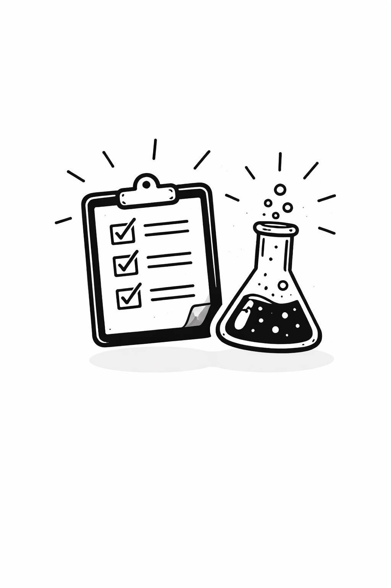

Інтернет-магазин
Адаптивна вітрина товарів на HTML5 та CSS Grid.

Науково-педагогічний стаж понад 10 років. Сфера наукових інтересів: проєктування програмних систем, вебтехнології, алгоритми штучного інтелекту та моделювання бізнес-процесів.
Закінчив Національний технічний університет, здобув ступінь кандидата технічних наук за спеціальністю «Інформаційні технології». Автор понад 20 наукових та навчально-методичних праць, учасник міжнародних конференцій з програмної інженерії та вебтехнологій.
Керує курсовими та дипломними роботами студентів, бере участь у розробленні навчальних програм кафедри. Практичний досвід включає участь у комерційних проєктах із розроблення вебзастосунків, тому на заняттях поєднує теорію з реальними прикладами з індустрії.
Особливу увагу приділяє формуванню в студентів навичок командної роботи, написання чистого коду та презентації результатів власних проєктів.
Веброзробка та дизайн інтерфейсів
Вивчення стандартів семантичної верстки HTML5 та сучасної стилізації CSS3 (Flexbox, Grid), створення прототипів у Figma, проєктування адаптивних вебсторінок та базова робота з клієнтським JavaScript.
Об'єктно-орієнтоване програмування
Принципи ООП: інкапсуляція, успадкування, поліморфізм. Проєктування класів та інтерфейсів, робота з патернами проєктування, написання програм мовою Java.
Архітектура та тестування програмного забезпечення
Архітектурні стилі та шаблони, розроблення технічної документації, модульне та інтеграційне тестування, автоматизація перевірок якості програмного коду.
Адаптивна вітрина товарів на HTML5 та CSS Grid.

Вебзастосунок для обліку лабораторного обладнання.
Односторінковий сайт із прототипом у Figma.
Закінчення університету, початок викладацької діяльності.
Захист кандидатської дисертації за спеціальністю «Інформаційні технології».
Отримання звання доцента, розроблення нових навчальних програм.
Перші публікації з оптимізації вебзастосунків.